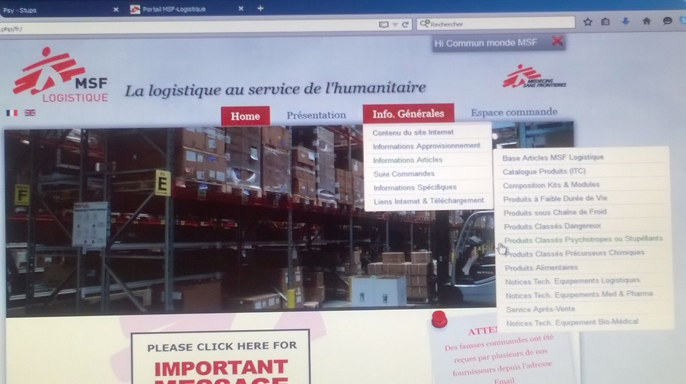

FR 2017 OCP Procédure produits psychotropes ou stupéfiants MSF Log

Psychotropes et stupéfiants
L’exportation vers des programmes utilisateurs (terrain) des produits médicaux classés "psychotrope" ou "stupéfiant" (voir liste produits ci-dessous) est soumise à des contraintes administratives particulières (autorisation d’importation indispensable).
| PSYCHOTROPE | STUPEFIANT |
|---|---|
| Diazepam (toutes formes & dosages) | Fentanyl (toutes formes & dosages) |
| Phénobarbital (toutes formes & dosages) | Morphine (toutes formes & dosages) |
| Midazolam (toutes formes & dosages) | Pentazocine (toutes formes & dosages) |
| Zopiclone (toutes formes & dosages) | Pethidine (toutes formes & dosages) |
| lprazolam (toutes formes & dosages) |
Lors de vos commandes, il est nécessaire de respecter scrupuleusement les étapes décrite ci-après (cette procédure demandant un certain délai, il est important de bien planifier vos commandes et de les grouper).
1° étape : Pour toute commande concernant ces produits vous devez obtenir l'autorisation d'importation signée par les autorités de votre pays (autorisations séparées pour psychotropes et stupéfiants). Sur cette autorisation doivent figurer les informations suivantes :
Le numéro d'autorisation.
Le libellé complet du produit : nom, dosage, forme (libellé MSF complet ) + quantité.
Le destinataire: nom et adresse du lieu où MSF Logistique va envoyer les produits (lieu de dédouanement).
Le nom et adresse de l'exportateur : MSF Logistique - 3 rue du Domaine de la Fontaine - 33700 MERIGNAC - FRANCE (et non le siège MSF !).
2° étape : Vous envoyez immédiatement (par fax ou E-mail) à votre interlocuteur(trice) du secteur Opération de MSF Logistique cette autorisation d'importation avec votre commande.
3° étape : Après vérification par le secteur Opération MSF Logistique, vous envoyez l'original de cette autorisation (faite et gardez une copie si vous n'avez pas obtenue cette autorisation en double exemplaire ...).
4° étape : Quand vous recevez les produits, faites constater par la douane le nom et la quantité de chaque produit concerné en vous munissant de votre exemplaire d'autorisation d'importation et de l'autorisation d'exportation délivrée par les autorités Françaises qui se trouve dans l'enveloppe accompagnant la lettre de transport aérien.
Psychotropes et stupéfiants inclus dans les kits …
Ces produits font l'objet d'un dossier spécifique et sont expédiés indépendamment des kits. Pensez à joindre les autorisations d'importations correspondantes avec vos commandes de kits.
Attention : la quantité de Diazepam injectable des kits a été arrondie en fonction du conditionnement disponible à MSF Logistique. C'est cette quantité qui doit figurer sur votre autorisation d'importation (contacter le secteur opération MSF Logistique).
Pas d'autorités accessibles dans votre pays …
Dans certains pays, il est impossible d'obtenir une autorisation d'importation (absence de ministère de la santé ou d'autorités compétentes ou une situation d'urgence rendant impossible l'accès aux autorités sanitaires du pays).
Dans ce cas, mais dans ce cas uniquement, une lettre décrivant le contexte, signée du pharmacien de MSF Logistique remplacera auprès des autorités Françaises l'autorisation d'exportation. De votre côté, il est alors indispensable qu'à l'arrivée des produits, vous nous envoyiez (fax ou E-mail) un accusé réception (cliquer ici pour télécharger le formulaire) signé du médecin MSF (médecin coordinateur ou autre médecin de l'équipe) reprenant le contenu psychotropes et/ou stupéfiants de l'envoi (articles et quantités).